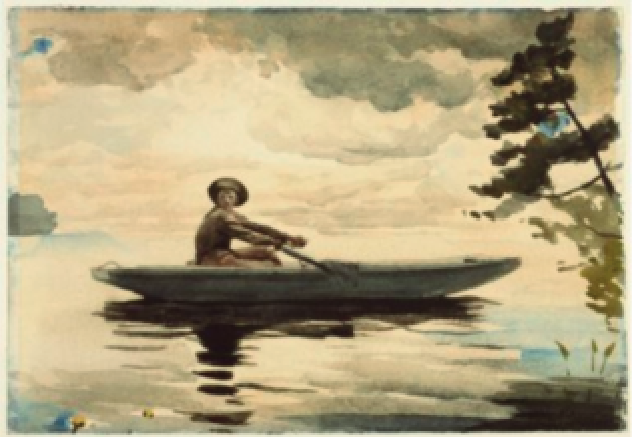

22
Texto I
Diabo — [...] Embarca — ou embarcai... que haveis de ir à derradeira! Mandai meter a cadeira, que assim passou vosso pai. Fildalgo — Quê? Quê? Quê? Assim lhe vai?! Diabo — Vai ou vem! Embarcai prestes! Segundo lá escolhestes, assim cá vos contentai. Pois que já a morte passastes, haveis de passar o rio. Fildalgo — Não há aqui outro navio? Diabo — Não, senhor, que este fretastes, e primeiro que expirastes me destes logo sinal. Fildalgo — Que sinal foi esse tal? Diabo — Do que vós vos contentastes. Fildalgo — A estoutra barca me vou. Hou da barca! Para onde is? Ah, barqueiros! Não me ouvis?
VICENTE, G. Auto da Barca do Inferno. Disponível em: http://www.dominiopublico.gov.br/download/texto/ua00111a.pdf.
Acesso em: 31 maio 2020 (adaptado)
Texto II

Brooklyn Museum. HOMER, W. (American, 1836-1910). the Boatman, 1891. Available at: https://www.brooklynmuseum.org/
opencollection/objects/48240. Access on: 31 may 2020 (adapted).
Texto III
Encomendou a canoa especial, de pau de vinhático, pequena, mal com a tabuinha da popa, como para caber justo o remador. Mas teve de ser toda fabricada, escolhida forte e arqueada em rijo, própria para dever durar na água por uns vinte ou trinta anos. Nosso pai entrou na canoa e desamarrou, pelo remar. E a canoa saiu se indo — a sombra dela por igual, feito um jacaré, comprida longa. Nosso pai não voltou. Ele não tinha ido a nenhuma parte. Só executava a invenção de se permanecer naqueles espaços do rio, de meio a meio, sempre dentro da canoa, para dela não saltar, nunca mais [...] Sou homem de tristes palavras. De que era que eu tinha tanta, tanta culpa? Se o meu pai, sempre fazendo ausência: e o rio-rio-rio, o rio — pondo perpétuo. Eu sofria já o começo de velhice — esta vida era só o demoramento. Eu mesmo tinha achaques, ânsias, cá de baixo, cansaços, perrenguice de reumatismo. E ele? Por quê? Devia de padecer demais. De tão idoso, não ia, mais dia menos dia, fraquejar do vigor, deixar que a canoa emborcasse, ou que bubuiasse sem pulso, na levada do rio, para se despenhar horas abaixo, em tororoma e no tombo da cachoeira, brava, com o fervimento e morte.
ROSA, J. G. A terceira margem dorio. In: ______. Ficção completa: volume II. Rio de Janeiro: Nova Aguilar, 1994, p. 409-413 (adaptado).
Acesso em: 31 maio 2020 (adaptado)
Considerando as informações apresentadas nos textos I, II e III, avalie as afirmações a seguir.
I. O texto I apresenta um trecho de uma peça teatral do humanismo português, isto é, período de
transição entre a cultura da Idade Média e do Renascimento, e menciona três elementos que são
importantes para a compreensão da morte como ritual de travessia.
II. Os três textos se comunicam, e no texto II há uma aquarela com lápis de grafite, desenhado sobre
papel grosso texturizado, uma representação surrealista das vanguardas artísticas europeias, que
surgiu em Paris no início do século XX.
III. O texto III apresenta trecho de um conto, em prosa coloquial, considerado obra literária do
contexto modernista brasileiro, cujo título não revela que terceira margem é esta, mas indica que
o pai segue rumo a um caminho desconhecido.
IV. As informações apresentadas nos textos tratam de manifestações artísticas dos gêneros conto, arte
pictórica e peça teatral, todas pertencentes ao mesmo contexto de manifestação artística e literária.
É correto apenas o que se afirma em: